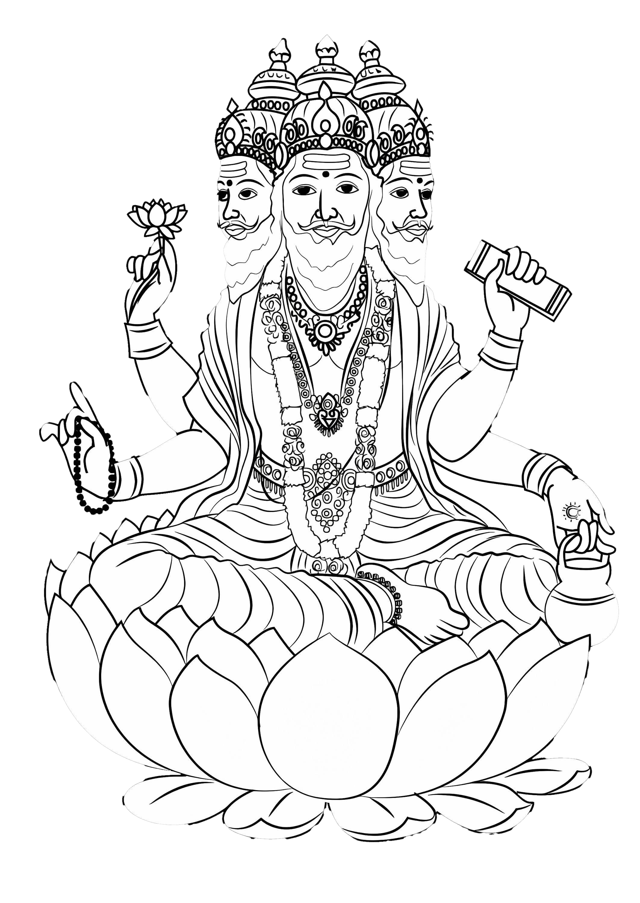

সৃষ্টিকর্তা ব্রহ্মা: হিন্দু পুরাণের এক গভীর বিশ্লেষণ

সারসংক্ষেপ
হিন্দু ধর্ম অনুযায়ী, সৃষ্টিকর্তা ব্রহ্মা ত্রিমূর্তির অন্যতম প্রধান দেবতা, যিনি মহাবিশ্ব সৃষ্টির দায়িত্বে রয়েছেন। তাঁর সহচর বিষ্ণু মহাবিশ্বের পালনকর্তা এবং শিব হলেন ধ্বংসের দেবতা। ব্রহ্মা তাঁর সৃষ্টির প্রতীক হিসেবে চারটি মাথা, চারটি হাত এবং একটি সাদা দাড়ি নিয়ে চিত্রিত হন। তবে, অন্যান্য প্রধান দেব-দেবী, যেমন বিষ্ণু ও শিবের তুলনায় তাঁর পূজা তুলনামূলকভাবে কম প্রচলিত। এই প্রতিবেদনের উদ্দেশ্য হল ব্রহ্মার জন্ম, তাঁর দায়িত্ব ও ভূমিকা, পূজিত না হওয়ার কারণ, এবং তাঁর সাথে জড়িত বিভিন্ন প্রতীক ও পৌরাণিক উপাখ্যানের একটি গভীর বিশ্লেষণ করা। এই বিশ্লেষণের মাধ্যমে এটি স্পষ্ট হবে যে, যদিও ব্রহ্মার ভূমিকা মহাবিশ্বের সূচনালগ্নে অত্যন্ত গুরুত্বপূর্ণ ছিল, তবুও তাঁর সীমিত পূজার কারণ হলো বেশ কিছু পৌরাণিক কাহিনী, যেখানে তাঁর অহংকার, মিথ্যাচার এবং অনুচিত কার্যকলাপের জন্য তাঁকে অভিশাপ দেওয়া হয়েছিল। এর পাশাপাশি, তাঁর সৃষ্টির কাজ সম্পন্ন হয়ে যাওয়ার কারণে এবং বিষ্ণু ও শিবের চলমান কার্যাবলীর (স্থিতি ও প্রলয়) জন্য ভক্তদের মধ্যে তাঁদের প্রতি ভক্তি বেশি দেখা যায়। এটি একটি জটিল এবং বহুমুখী বিষয় যা হিন্দুধর্মের বিবর্তন এবং ভক্তিবাদী আন্দোলনের দ্বারা গভীরভাবে প্রভাবিত হয়েছে।
প্রথম অধ্যায়: ব্রহ্মার উৎপত্তি এবং সৃষ্টিতত্ত্ব
১.১. ব্রহ্মার জন্ম সংক্রান্ত পৌরাণিক কাহিনী
হিন্দু ধর্মগ্রন্থে ব্রহ্মার জন্ম নিয়ে একাধিক বর্ণনা পাওয়া যায়। সবচেয়ে প্রচলিত কাহিনী অনুযায়ী, ব্রহ্মা কোনো সাধারণ জন্ম প্রক্রিয়ায় জন্ম নেননি। তিনি 'স্বয়ম্ভু' বা 'স্ব-জাত' হিসেবে পরিচিত, যার অর্থ তিনি নিজে থেকেই প্রকাশিত হয়েছেন। পুরাণ অনুযায়ী, ব্রহ্মা পরমব্রহ্ম বা পরম সত্য থেকে উদ্ভূত হয়েছেন। একসময় যখন মহাবিশ্বে কিছুই ছিল না, তখন শুধু পরমব্রহ্মের অস্তিত্ব ছিল। সেই পরমব্রহ্মই তার নিজের ইচ্ছাশক্তি থেকে জল সৃষ্টি করেন এবং তাতে তার বীজ স্থাপন করেন। এই বীজ থেকে একটি স্বর্ণডিম্বের (হিরণ্যগর্ভ) জন্ম হয়, যা থেকে ব্রহ্মা আবির্ভূত হন। অন্য একটি জনপ্রিয় পৌরাণিক উপাখ্যান অনুসারে, ব্রহ্মা মহাবিশ্বের পালনকর্তা বিষ্ণুর নাভি থেকে উৎপন্ন একটি পদ্মফুল থেকে জন্মগ্রহণ করেন। এই কাহিনীতে, বিষ্ণু যখন মহাজাগতিক সাগরে যোগনিদ্রায় মগ্ন ছিলেন, তখন তাঁর নাভি থেকে একটি পদ্ম প্রস্ফুটিত হয় এবং সেই পদ্মের উপর ব্রহ্মা আবির্ভূত হন। এটি ব্রহ্মার অন্য একটি নাম 'নাভিজা' (নাভি থেকে জন্ম নেওয়া) এর উৎস। এছাড়াও, ব্রহ্মাকে কখনও কখনও পরমাত্মা বা পরমব্রহ্মের প্রথম মূর্ত রূপ হিসেবে দেখা হয়, যিনি সৃষ্টির কাজ সম্পন্ন করার জন্য নিজেকে তিনটি রূপে (সৃষ্টিকারী ব্রহ্মা, পালনকারী বিষ্ণু, এবং ধ্বংসকারী শিব) বিভক্ত করেছেন।
১.২. ব্রহ্মার সৃষ্টির প্রক্রিয়া
ব্রহ্মা শুধু মহাবিশ্ব সৃষ্টি করেননি, বরং তিনি প্রতিটি জীবের সত্তা, প্রকৃতি, এবং এই জগতের সবকিছুরই সৃষ্টিকর্তা। পুরাণ অনুযায়ী, ব্রহ্মা প্রথমে জল থেকে একটি গোলক বা 'মণ্ড' তৈরি করেন। এরপর সেই মণ্ডকে তিনি দুটি ভাগে বিভক্ত করে আকাশ ও ভূমি সৃষ্টি করেন। এই গোলক থেকে তিনি সমগ্র মহাবিশ্ব সৃষ্টি করেছিলেন বলে এই সংসারকে 'ব্রহ্মাণ্ড' বলা হয়। তাঁর সৃষ্টির কাজ পরিচালনার জন্য, ব্রহ্মা তাঁর মন থেকে বেশ কিছু সন্তান সৃষ্টি করেন, যাদেরকে 'মানসপুত্র' বলা হয়। এই মানসপুত্রদের মধ্যে উল্লেখযোগ্য হলেন সপ্তর্ষি এবং নারদ, যাদের প্রত্যেকের উপর ব্রহ্মা সৃষ্টির বিভিন্ন দায়িত্ব অর্পণ করেন। মনুস্মৃতি গ্রন্থে এই প্রজাপতিদের নাম পাওয়া যায়, যারা মানবজাতির আদি পিতা। তিনি মনু এবং শতরূপা নামক প্রথম পুরুষ ও নারীকে সৃষ্টি করেন, যাদের বংশধর থেকে মানবজাতির উদ্ভব হয়েছে। এছাড়াও, তিনি তাঁর শরীর থেকে দেবতা, অসুর, পূর্বপুরুষ এবং মানুষসহ আরও কিছু সত্তা সৃষ্টি করেছিলেন। মহাভারত অনুসারে, দেবতারা যখন মানবজাতির ক্রমবর্ধমান ক্ষমতা দেখে ভীত হন, তখন ব্রহ্মা নারী ও মৃত্যুর সৃষ্টি করেন, যাতে মহাবিশ্বে ভারসাম্য বজায় থাকে।
দ্বিতীয় অধ্যায়: ব্রহ্মার ভূমিকা ও দায়িত্ব
২.১. ত্রিমূর্তিতে ব্রহ্মার অবস্থান
হিন্দু ধর্মাবলম্বীরা ব্রহ্মা, বিষ্ণু এবং শিবকে ত্রিমূর্তি হিসেবে উপাসনা করেন, যেখানে ব্রহ্মা সৃষ্টির, বিষ্ণু রক্ষার এবং শিব ধ্বংসের প্রতীক। এই তিন দেবতা মহাজাগতিক চক্রের তিনটি প্রধান কার্যাবলী সম্পন্ন করেন, যা একে অপরের পরিপূরক। হিন্দু দর্শনে, এই তিন দেবতাকে প্রায়শই একই পরম সত্তা বা ব্রহ্মের ভিন্ন ভিন্ন রূপ হিসেবে দেখা হয়। শৈব দর্শনে, শিবকে সর্বোচ্চ দেবতা হিসেবে মনে করা হয়, যিনি সৃষ্টি, পালন, এবং ধ্বংসের মতো পাঁচটি প্রধান কাজ সম্পাদন করেন। এই দৃষ্টিকোণ থেকে, ব্রহ্মা এবং বিষ্ণু শিবের ভিন্ন রূপ বা তাঁর অধীনস্থ সত্তা হিসেবে বিবেচিত হন।
২.২. ব্রহ্মার প্রতীকী গুরুত্ব
ব্রহ্মার চারটি মুখ রয়েছে, যা জ্ঞানের সর্বব্যাপীতা নির্দেশ করে। প্রতিটি মুখ চারটি দিক এবং চারটি বেদের (ঋগ্বেদ, যজুর্বেদ, সামবেদ ও অথর্ববেদ) প্রতীক। তাঁর চারটি হাতও চারটি প্রধান দিককে নির্দেশ করে। এই হাতগুলিতে তিনি জ্ঞান ও সৃষ্টির বিভিন্ন প্রতীক বহন করেন : বেদ: তাঁর হাতে থাকা বেদ জ্ঞান ও প্রজ্ঞার উৎস হিসেবে তাঁর ভূমিকাকে প্রতীকী করে। কমণ্ডলু (জলপাত্র): এটি মহাবিশ্বের জীবন ও নতুন সৃষ্টির প্রতীক। জপমালা: এটি মহাবিশ্ব সৃষ্টির উপাদানগুলির প্রতীক এবং এটি সময়ের চক্রাকার প্রকৃতিরও প্রতিনিধিত্ব করে। পদ্মফুল: পদ্ম পবিত্রতা এবং মহাজাগতিক প্রকৃতির প্রতীক। হংস (বাহন): ব্রহ্মার বাহন হংস জ্ঞান এবং বিচক্ষণতার প্রতীক। এছাড়াও, তাঁর সাদা দাড়ি প্রজ্ঞা এবং সৃষ্টির অনন্ত প্রক্রিয়াকে নির্দেশ করে।
২.৩. ব্রহ্মার কালচক্র
হিন্দু সৃষ্টিতত্ত্ব অনুসারে, মহাবিশ্ব একটি চক্রাকার প্রক্রিয়ার মধ্যে দিয়ে অবিরাম সৃষ্টি ও ধ্বংস হতে থাকে। এই চক্র ব্রহ্মার জীবনের সাথে সম্পর্কিত, যা কল্প এবং মন্বন্তরের মতো বিশাল সময়ের এককে পরিমাপ করা হয়। কল্প (ব্রহ্মার একদিন): ব্রহ্মার একটি দিনকে একটি কল্প বলা হয়, যার সময়কাল ৪.৩২ বিলিয়ন মানব বছরের সমান। এই সময়ের মধ্যে, জীবন মহাবিশ্বে বিদ্যমান থাকে। ব্রাহ্ম অহোরাত্র (ব্রহ্মার দিন ও রাত): ব্রহ্মার দিন ও রাত মিলিয়ে একটি পূর্ণ চক্র সম্পন্ন হয়, যার মোট সময়কাল ৮.৬৪ বিলিয়ন মানব বছর। ব্রহ্মার রাতের সময় মহাবিশ্বের প্রলয় বা ধ্বংস ঘটে, এবং সেই সময় কোনো প্রাণের অস্তিত্ব থাকে না। ব্রহ্মার জীবনকাল: ব্রহ্মার জীবনকাল ১০০ ব্রহ্ম-বছরের সমান, যা মানব বছরের হিসাবে প্রায় ৩১১.০৪ ট্রিলিয়ন বছর। এই সময়কালকে 'মহাকল্প' বলা হয়। এই সময়কাল শেষ হলে, ব্রহ্মা নিজেই পরম সত্তায় বিলীন হয়ে যান, এবং নতুন করে এক মহাকল্পের সূচনা ঘটে। এই কালচক্রের ধারণাটি মহাবিশ্বের অন্তহীন চক্রাকার প্রকৃতিকে তুলে ধরে, যেখানে সৃষ্টি ও ধ্বংস নিরন্তর চলতে থাকে।
তৃতীয় অধ্যায়: ব্রহ্মার পূজা না হওয়ার কারণ
৩.১. শিবের অভিশাপ
ব্রহ্মার পূজা না হওয়ার পেছনে সবচেয়ে প্রচলিত কারণ হল শিবের দেওয়া দুটি অভিশাপ। জ্যোতির্লিঙ্গের গল্প: একটি পুরাণে বর্ণিত আছে যে, একবার ব্রহ্মা এবং বিষ্ণু নিজেদের মধ্যে কে শ্রেষ্ঠ, তা নিয়ে বিতর্কে জড়িয়ে পড়েন। তাঁদের শ্রেষ্ঠত্ব প্রমাণ করার জন্য শিব একটি বিশাল, অনন্ত আলোর স্তম্ভ (জ্যোতির্লিঙ্গ) হিসেবে আবির্ভূত হন এবং তাঁদেরকে তার শুরু ও শেষ খুঁজে বের করার জন্য বলেন। ব্রহ্মা একটি রাজহাঁসের রূপ ধারণ করে স্তম্ভের শীর্ষ খুঁজতে উপরে উড়তে থাকেন, আর বিষ্ণু একটি শূকরের রূপ ধরে স্তম্ভের মূল খুঁজতে নিচে খনন করতে থাকেন। বিষ্ণু তাঁর ব্যর্থতা বিনীতভাবে স্বীকার করে ফিরে আসেন, কিন্তু ব্রহ্মা মিথ্যা বলেন যে তিনি শীর্ষ খুঁজে পেয়েছেন এবং প্রমাণ হিসেবে একটি কেতকী ফুলকে সাক্ষী হিসেবে পেশ করেন। ব্রহ্মার এই মিথ্যাচারে ক্রুদ্ধ হয়ে শিব তাঁর পঞ্চম মাথাটি কেটে দেন এবং অভিশাপ দেন যে, পৃথিবীতে কোনো মানুষের দ্বারা ব্রহ্মার পূজা হবে না। শতরূপার গল্প: আরেকটি পৌরাণিক কাহিনীতে বলা হয়েছে, ব্রহ্মা যখন সৃষ্টি প্রক্রিয়া চালাচ্ছিলেন, তখন তিনি নিজের সুবিধার জন্য শতরূপা নামে এক সুন্দরী নারীকে সৃষ্টি করেন। তিনি শতরূপার রূপে মোহিত হয়ে পড়েন এবং তাঁর দিকে কামার্ত দৃষ্টিতে তাকাতে শুরু করেন। শতরূপা ব্রহ্মার দৃষ্টি এড়ানোর জন্য বিভিন্ন দিকে যেতে থাকেন, কিন্তু শতরূপাকে দেখার জন্য ব্রহ্মা প্রতিটি দিকে একটি করে মাথা তৈরি করেন, এমনকি আকাশের দিকেও একটি মাথা গজিয়ে ওঠে, ফলে তাঁর পাঁচটি মাথা হয়। এই অবৈধ যৌনাচারের অপরাধে শিব ব্রহ্মার পঞ্চম মাথাটি কেটে দেন এবং অভিশাপ দেন যে তাঁর পূজা হবে না। এই ঘটনার পর থেকে ব্রহ্মা অনুতাপের প্রতীক হিসেবে চারটি মুখ নিয়ে থাকেন।
৩.২. অন্যান্য কারণ
সৃষ্টির সমাপ্তি: কিছু পণ্ডিত মনে করেন যে, ব্রহ্মা কেবল সৃষ্টির দেবতা, এবং তাঁর কাজ একবার সম্পন্ন হয়ে গেলে তাঁর পূজা করার প্রয়োজন কমে যায়। বিষ্ণু ও শিবের কাজ (পালন ও ধ্বংস) যেহেতু চলমান, তাই তাঁদের পূজা বেশি প্রচলিত। আত্মা ও জাগতিক আসক্তি: কিছু দার্শনিক দৃষ্টিকোণ থেকে, ব্রহ্মা তাঁর সৃষ্টি ও জাগতিক আকাঙ্ক্ষার প্রতি আসক্ত হয়ে পড়েছিলেন, যা তাঁকে পূজার অযোগ্য করে তোলে। বিষ্ণু ও শিবের পূজা করার মাধ্যমে ভক্তরা জাগতিক আসক্তি থেকে মুক্তি এবং আধ্যাত্মিক উন্নতির দিকে মনোযোগ দেন। ভক্তি আন্দোলনের অভাব: ব্রহ্মা বিষ্ণু এবং শিবের মতো ভক্তি আন্দোলনের কেন্দ্রবিন্দুতে ছিলেন না। এই আন্দোলনগুলি জনপ্রিয় দেবতাদের প্রতি ব্যক্তিগত ভক্তিকে প্রাধান্য দিয়েছিল, যার ফলে বিষ্ণু (বৈষ্ণব ধর্ম) এবং শিব (শৈব ধর্ম) এর উপাসনা ব্যাপক জনপ্রিয়তা লাভ করে, কিন্তু ব্রহ্মার জন্য কোনো স্বতন্ত্র সম্প্রদায়ের উদ্ভব হয়নি।
চতুর্থ অধ্যায়: ব্রহ্মার পূজা ও মন্দির
যদিও ব্রহ্মা প্রধানত পূজিত হন না, তবুও তাঁর জন্য কিছু উল্লেখযোগ্য মন্দির রয়েছে, যা এই অভিশাপের ব্যতিক্রম। পুষ্কর মন্দির, রাজস্থান: এটি ভারতে ব্রহ্মার উদ্দেশ্যে নিবেদিত সবচেয়ে বিখ্যাত এবং সম্ভবত একমাত্র মন্দির, যেখানে নিয়মিত পূজা করা হয়। এর পেছনে একটি বিশেষ কাহিনী রয়েছে: ব্রহ্মা পুষ্করে একটি যজ্ঞের আয়োজন করেছিলেন, কিন্তু তাঁর স্ত্রী সরস্বতী যথাসময়ে উপস্থিত হতে পারেননি। এতে অধৈর্য হয়ে ব্রহ্মা গায়ত্রী নামক একজন স্থানীয় নারীকে বিবাহ করে যজ্ঞ সম্পন্ন করেন। দেরিতে আসা সরস্বতী এই ঘটনা দেখে অত্যন্ত ক্রুদ্ধ হন এবং ব্রহ্মাকে অভিশাপ দেন যে, পৃথিবীতে শুধুমাত্র পুষ্কর ছাড়া অন্য কোথাও তাঁর পূজা হবে না। ব্রহ্মা মন্দির, বিন্দুসাগর, ভুবনেশ্বর: ওড়িশার ভুবনেশ্বরে অবস্থিত এই মন্দিরের একটি কিংবদন্তি হলো যে, ব্রহ্মা লিঙ্গরাজ মন্দিরের রুকুন রথের সারথি হওয়ার প্রতিশ্রুতি দিয়েছিলেন, যার জন্য তাঁর সম্মানে এখানে একটি মন্দির তৈরি করা হয়। ব্রহ্মাপুরেশ্বরর মন্দির, ত্রিচি, তামিল নাড়ু: ত্রিচির কাছে অবস্থিত এই মন্দিরটি ভক্তদের বিশ্বাস অনুযায়ী ভাগ্য পরিবর্তন করতে সাহায্য করে, যেখানে ভক্তরা ব্রহ্মা এবং ব্রহ্মাপুরেশ্বরর শিবের আশীর্বাদ প্রার্থনা করে। ব্রহ্মা মন্দির, কারাম্বোলিম, গোয়া: এই প্রাচীন মন্দিরে কদম্ব রাজবংশের আমলের ব্রহ্মার একটি মূর্তি রয়েছে। এছাড়াও, হরিয়ানার কুরুক্ষেত্রে অবস্থিত 'ব্রহ্ম সরোবর' নামের একটি পবিত্র জলাশয় রয়েছে, যেখানে বলা হয় ব্রহ্মা একটি যজ্ঞের মাধ্যমে মহাবিশ্বের সৃষ্টি করেছিলেন।
উপসংহার
ব্রহ্মা, হিন্দু ত্রিমূর্তির অন্যতম প্রধান দেবতা হিসেবে মহাবিশ্বের সৃষ্টির মূল কারণ এবং জ্ঞানের প্রতীক। তাঁর উৎপত্তি, পৌরাণিক উপাখ্যান এবং কালচক্রের ধারণাগুলি মহাবিশ্বের প্রকৃতি ও অস্তিত্বের গভীর দার্শনিক দিককে প্রতিফলিত করে। যদিও তাঁর সীমিত পূজা প্রচলিত, তবে এর কারণগুলি পৌরাণিক অভিশাপ এবং তাঁর ভূমিকা সম্পন্ন হয়ে যাওয়ার ধারণার সাথে জড়িত। তা সত্ত্বেও, ব্রহ্মা হিন্দুধর্মের একটি অবিচ্ছেদ্য অংশ হিসেবে থেকে গেছেন, যিনি মহাজাগতিক বিধানের মাধ্যমে সৃষ্টিকে নিরন্তর পরিচালনা করছেন। তাঁর উপাখ্যানগুলি আমাদের শেখায় যে, অহংকার, মিথ্যাচার এবং আসক্তির পরিণাম ক্ষতিকর হতে পারে, এবং সত্য ও বিনয় আধ্যাত্মিক বিকাশের জন্য অপরিহার্য। যদিও তাঁর মন্দির খুব বেশি নেই, তবুও পুষ্কর ও অন্যান্য স্থানে তাঁর পূজা এবং তাঁর সাথে জড়িত বিভিন্ন প্রতীক ও কাহিনী আজও তাঁর গুরুত্বকে সমুন্নত রেখেছে।